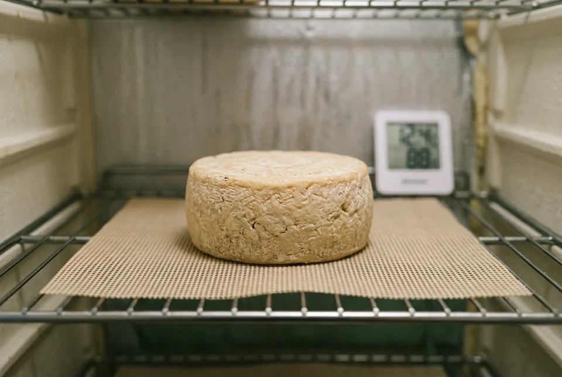

Equipment
- 8–10 qt (7.5–9.5 L) stainless-steel pot
- Accurate dairy thermometer
- Long knife or curd knife
- Slotted spoon
- Butter muslin or fine cheesecloth
- Cheese mold and small cheese press
- Food-safe cheese mat
- Kitchen scale
- Separate lidded container for brining
- Aging fridge or cheese cave with thermometer and hygrometer
Sanitize and Set Up
Clean the equipment.
Wash the pot, thermometer, knife, spoon, mold, cloth, press, mat, and work surface. Sanitize all equipment that will touch the milk or curds according to the sanitizer’s label.
Prepare the additives.
Dilute the calcium chloride and rennet separately in their measured portions of cool, non-chlorinated water. Keep the culture dry until it is time to use it.
Prepare the aging space.
Before starting, confirm that your cheese cave can hold 47–50°F (8–10°C) and about 85% relative humidity. A regular refrigerator is generally too cold and dry for this aging schedule.
Culture and Coagulate the Milk
Heat the milk.
Pour the sheep’s milk into the sanitized pot. Heat slowly to 99°F (37°C), stirring gently so it warms evenly.
Add the culture.
Sprinkle the thermophilic culture over the surface and let it rehydrate for about 2 minutes. Stir it in gently, then hold the milk at 99°F (37°C) for 60 minutes. Use a warm-water bath or low heat to maintain temperature.
Add calcium chloride.
Stir the diluted calcium chloride into the milk and wait about 5 minutes.
Add the rennet.
Pour in the diluted rennet and stir gently for about 30 seconds. Stop the milk’s movement, cover the pot, and leave it undisturbed.
Check the curd.
Begin checking after 30 minutes. Insert a clean knife at an angle and lift slightly. The curd should split cleanly, rather than breaking into soft, yogurt-like pieces. If it has not set, cover the pot and check again every 5 minutes.
Cut and Cook the Curds
Make the first cuts.
Cut the curd in a grid about 1½ inches (4 cm) wide, reaching the bottom of the pot. Let it rest for 5 minutes so the cut surfaces firm up.
Break the curd smaller.
Stir slowly with a whisk or slotted spoon until the curds are about hazelnut-sized. Keep the motion gentle so they do not break into uneven fines.
Cook the curds.
Gradually raise the temperature to 108°F (42°C) while stirring gently and continuously. Aim to reach the target over roughly 30–40 minutes. As the curds firm, they should shrink to about rice-grain size.
Let the curds settle.
Turn off the heat and allow the curds to settle briefly. They should feel firmer than when first cut and hold their shape when gently squeezed.
Mold and Press
Fill the mold.
Line the mold with clean butter muslin. Transfer the curds with a slotted spoon, letting excess whey drain. Press each layer gently by hand as you fill the mold, then fold the cloth over the top.
Press and turn.
Press the wheel for 6 hours, turning it in the mold every 90 minutes. The Pecorino Toscano-style method uses relatively light pressure—about the weight of the filled mold and cheese for a single wheel. If your press has a tested setting for this cheese, use that instead.
Keep it warm while pressing.
Keep the cheese around 68–77°F (20–25°C) during pressing. After the 6-hour press, leave the cheese in its mold for about 15 more hours at the same temperature.
Brine and Dry the Wheel
Unmold and weigh the cheese.
Remove the wheel from the mold and peel away the cloth. Check that the outside is reasonably smooth and the wheel holds its shape.
Make the brine.
Dissolve 400 g salt in 1.6 kg water. Chill the brine to the aging temperature, about 47–50°F (8–10°C).
Salt the cheese.
Place the wheel in the brine for 12 hours. Keep it submerged with a sanitized small plate if necessary, and turn it halfway through.
Drain and dry.
Remove the wheel and let the brine drain. Set it on a clean cheese mat in the aging space for 24–48 hours, turning it daily, until there is no wet brine on the surface.
Age and Store
Age the wheel.
Mature the cheese at 47–50°F (8–10°C) and about 85% humidity. Turn it twice a week. Age for 4–6 months for a firm, developed Pecorino-style cheese; age longer for a drier, sharper wheel.

Inspect it as it ages.
Check the surface whenever you turn the wheel. A rind may develop surface growth, but don’t assume every mold is harmless or beneficial. If the wheel becomes slimy, smells strongly unpleasant, or develops growth you cannot confidently identify, do not taste it.
Finish and refrigerate.
When the cheese reaches the texture and flavor you want, cut it into wedges and vacuum-seal them. Refrigerate the sealed cheese.
How to Use It
- At 4–6 months: Shave or slice it for a cheese board, sandwiches, salads, roasted vegetables, beans, and soups.
- When well aged and firm: Grate it over pasta, including cacio e pepe, carbonara, gricia, and amatriciana. Taste before adding salt; Pecorino can be quite salty.
- Serve with pears, figs, honey, olives, or good sourdough.